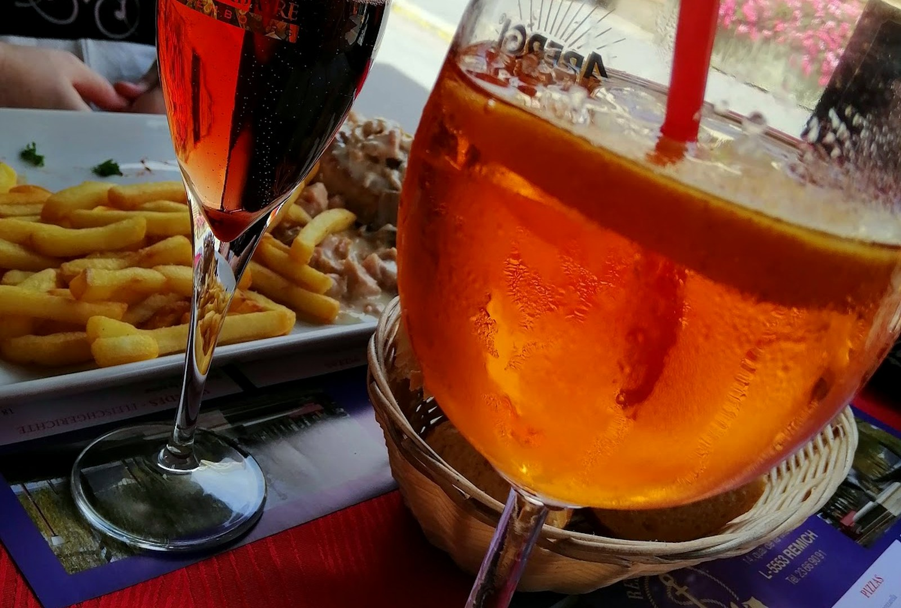
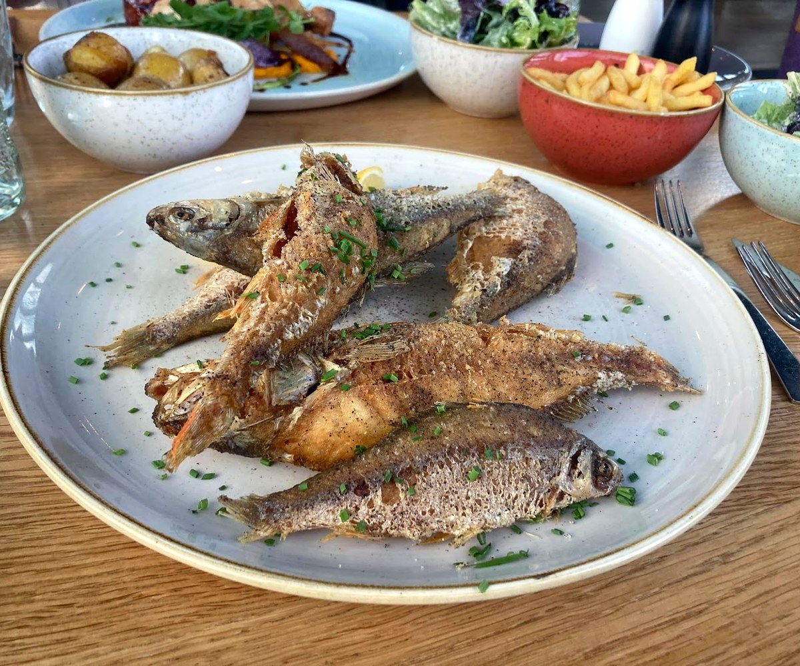
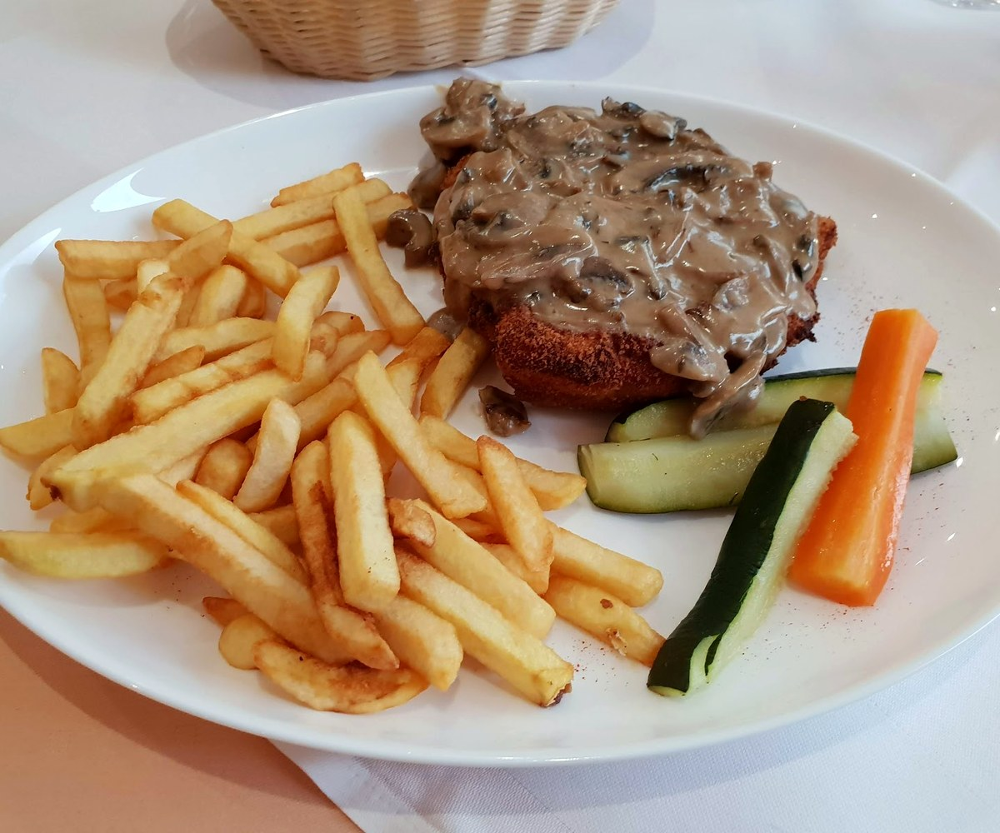
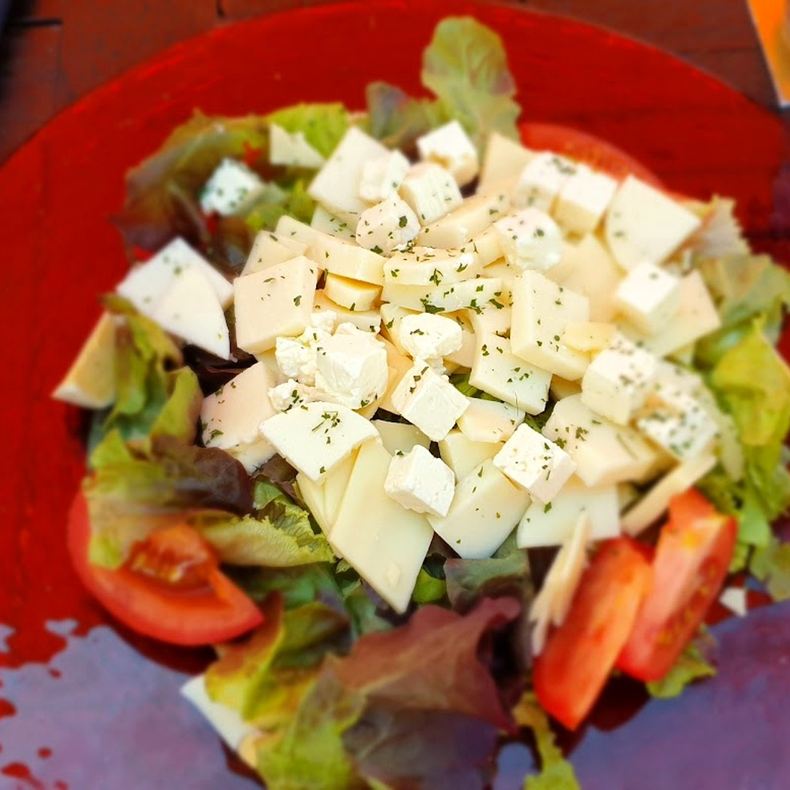
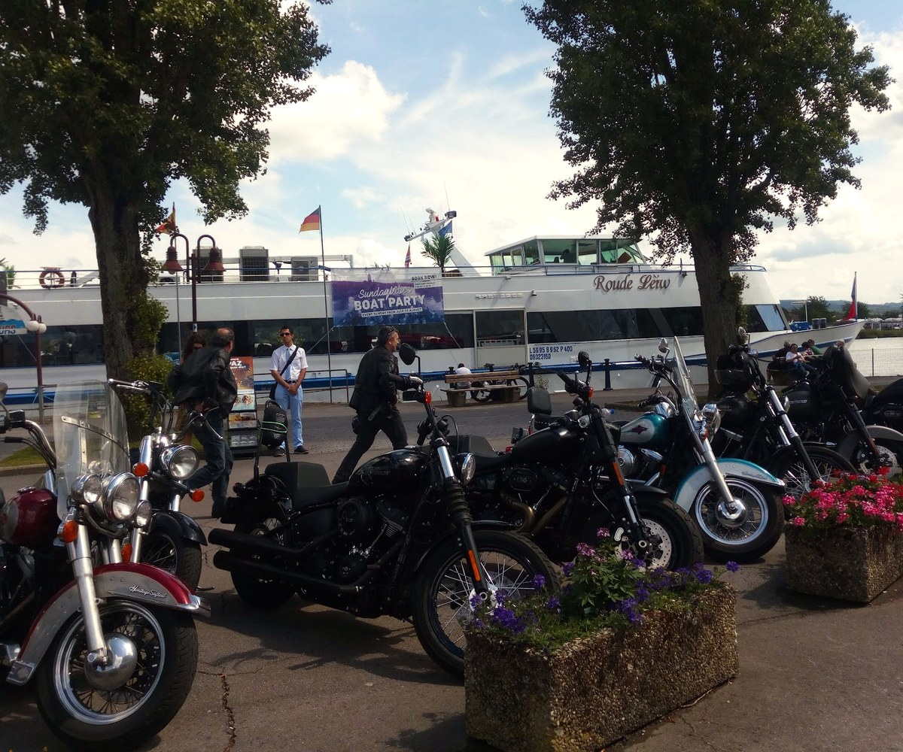
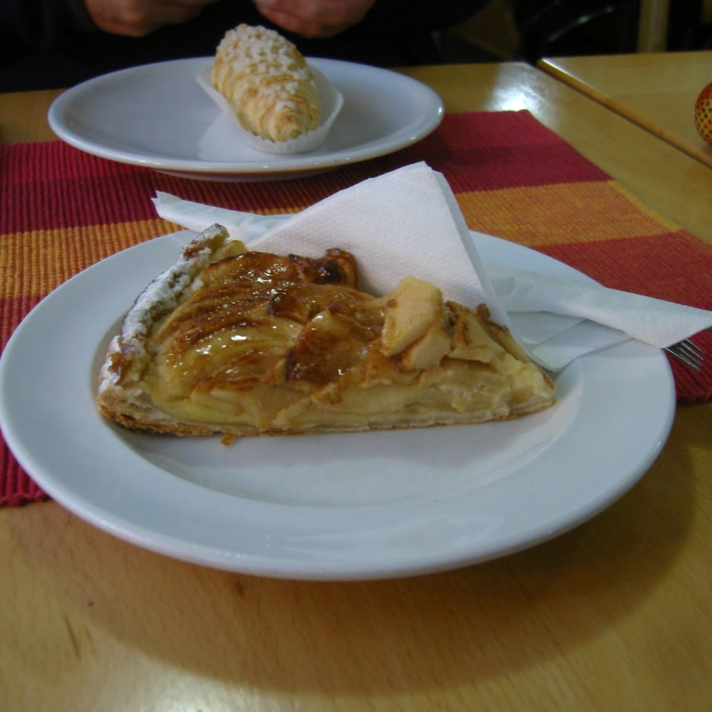
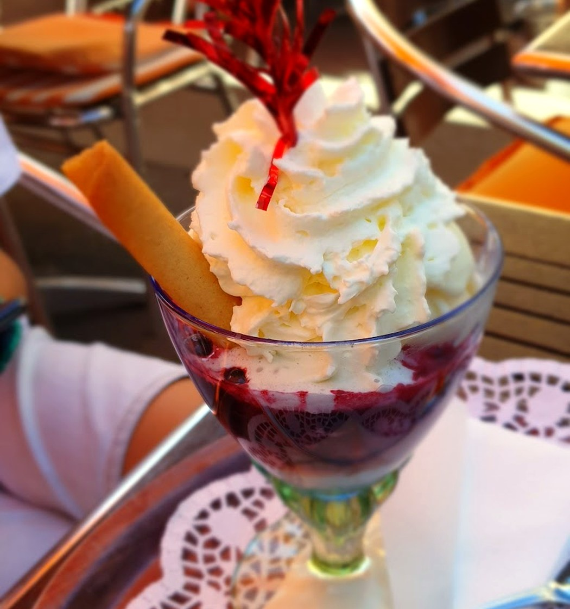
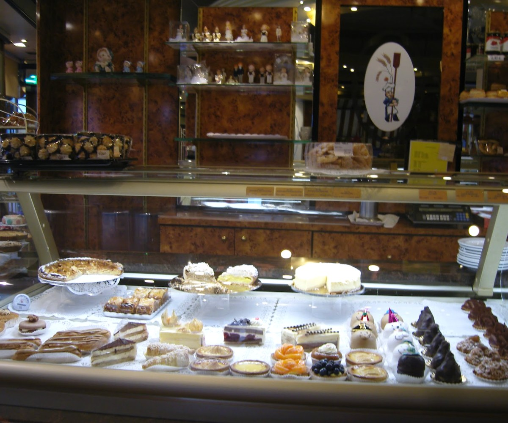
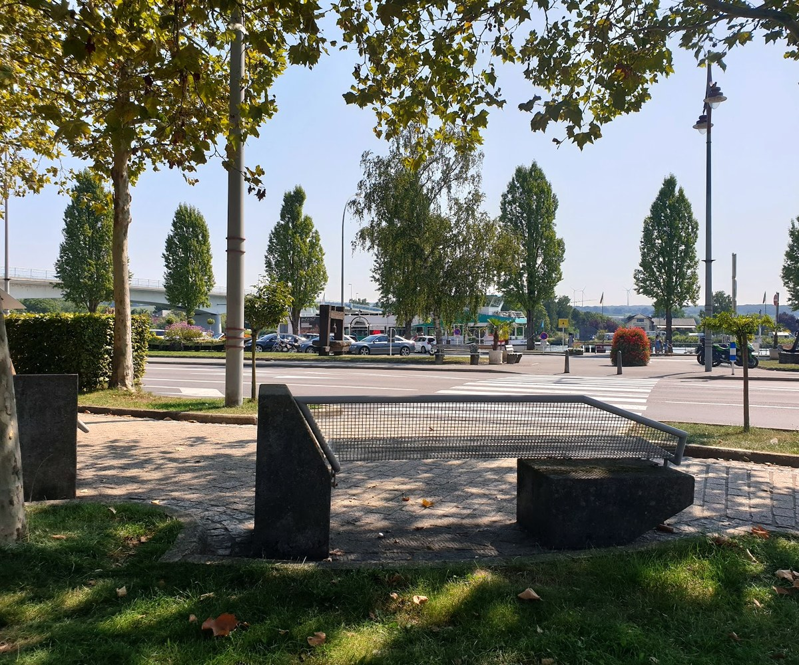

Friture de la Moselle
Les petits poissons de la rivière, frits à la minute — les pieds au bord de l'eau, un verre de Riesling à la main.
petits poissons frits, citron, frites
face à la rivière et aux bateaux
le vin du coteau, juste à côté
La friturede la Moselle.
Des petits poissons de rivière, légèrement panés et frits à la minute, avec un quartier de citron et des frites maison.
C'est le plat qui porte le nom de la rivière, et qu'on mange avec les doigts. Simple, généreux, croustillant — comme on le fait sur la Moselle depuis toujours. Avec un verre de Riesling, face à l'eau.

Frite à la minuteLa cuisine du bord de l'eau
La friture et les moules, mais aussi les grillades, les salades, les tartes maison et les glaces — une cuisine de terrasse, simple et généreuse.






Ce qu'on sert
Une carte de terrasse au bord de l'eau. Voici les plats de la maison — les prix se confirment sur place.
La friture & les poissons
Les classiques
Les douceurs
Les vins de la Moselle
Plats relevés à partir de sources publiques (avis, annuaires), à titre indicatif. Aucun prix n'est publié : la carte, les prix et la saison (souvent fermé le mardi) sont à confirmer avec la maison.
Les piedsau bord de l'eau.
La terrasse donne sur la Moselle : les bateaux de croisière qui passent, les coteaux de Riesling en face, et le clapotis de la rivière. On s'installe, on commande une friture, et on prend son temps.

Nous trouver
L-5553 Remich · sur l'esplanade
Établissement saisonnier · souvent fermé le mardi · horaires à confirmer